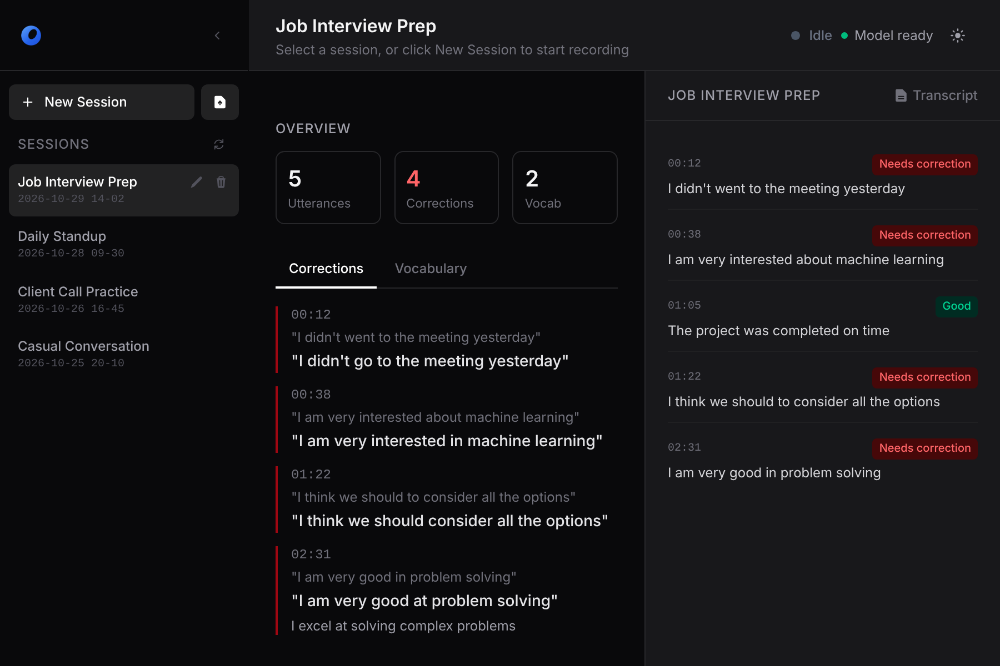
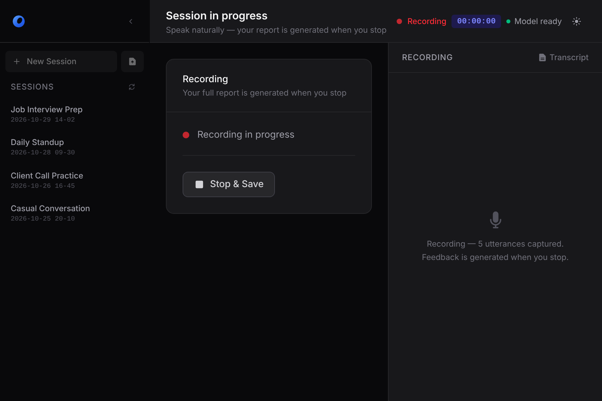
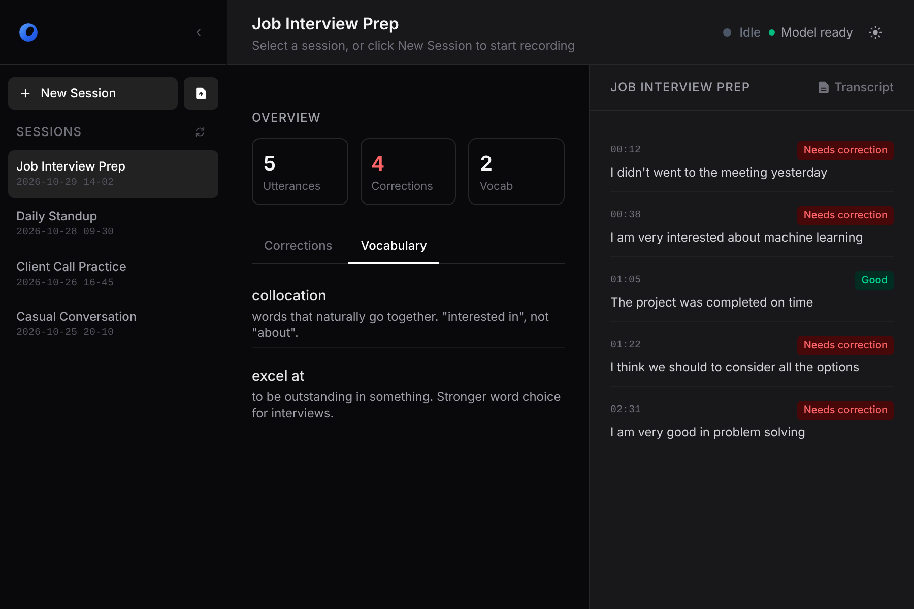

Stop saying it wrong.
Speak naturally, then see how a native would say every line.
macOS 12+, Apple Silicon and Intel. Free. See how it works

What a session looks like.
One job interview practice. Four sentences, three of them fixed.
| Time | You said | Scoldler | Why |
|---|---|---|---|
| 00:12 | I didn’t go to the meeting yesterday | Past simple after the auxiliary “didn’t” | |
| 00:38 | I am very interested in machine learning | “Interested in” is the collocation | |
| 01:05 | The project was completed on time | No corrections needed | |
| 01:22 | I think we should consider all the options | Modal verbs take no “to” before the infinitive |
Talk. Get caught. Get better.
Record a job interview, a call or a presentation, then read what to fix.


Everything in one window.
Transcription, corrections and coaching, side by side with your sessions.
- Speech transcription
- Whisper, on your Mac. Every word you say is captured, whatever the topic.
- Correction engine
- Wrong tense, wrong preposition, an extra “to”: each one shown next to the corrected form.
- Native phrasing
- Correct but still sounds off? Scoldler suggests how a native speaker would say it.
- Coaching in context
- Idioms and stronger phrases explained from what you actually said, not from a dictionary.
- Session archive
- Every session is saved with its transcript and corrections. Rename it, review it, come back to it.
- Dark and light
- Follows your Mac, or switch it from the toolbar.
Your voice never leaves your Mac.
Your audio, your transcripts and your mistakes stay on your machine. Scoldler runs its models with Ollama, locally.
- Your voiceFrom the microphone
- WhisperTranscribed on your Mac
- OllamaCorrected by a local model
- The cloudNever sent
- Zero data collection
- No account required
- Works without internet
- No subscription, ever
Start speaking better today.
No signup. No credit card. No excuses.
Download Scoldler, freemacOS 12+, Apple Silicon and Intel. Everything is included; the first launch downloads the models.